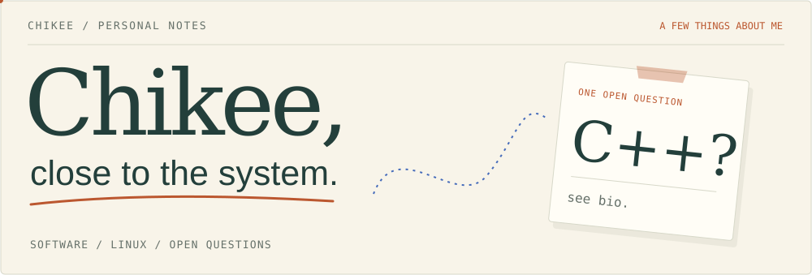
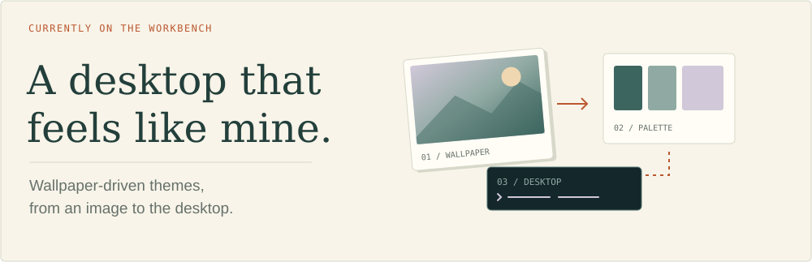

I'm Chikee. My background is in C/C++ and embedded systems, with work across software architecture, cross-platform integration, and runtime performance on Linux and QNX.
I like understanding how software fits together — from its build to the machine it runs on.

Here on GitHub, I explore Linux workstations and developer tools. One current rabbit hole: how a wallpaper can shape the desktop around it.
Some of that tinkering lives in utopia ↗, my Linux workstation project.
Languages C
C  C++
C++  Python Shell
Python Shell
Platforms Linux QNX
Linux QNX
Builds & version control CMake Conan Bazel
CMake Conan Bazel  Git
Git